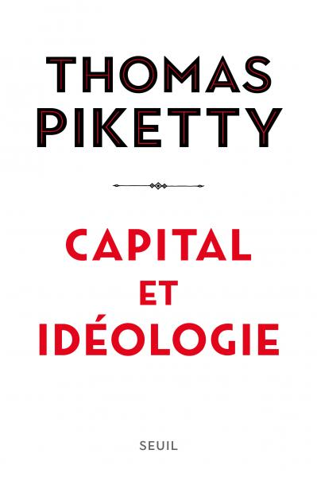
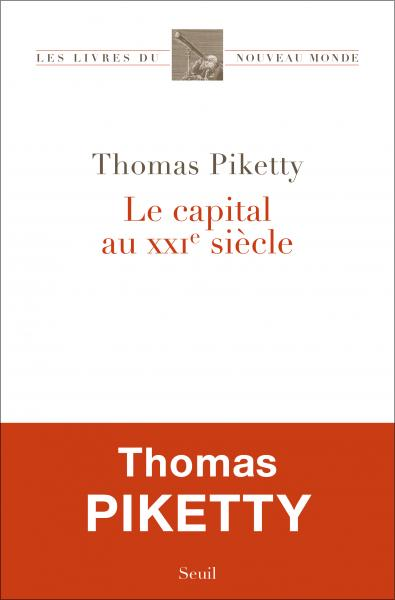
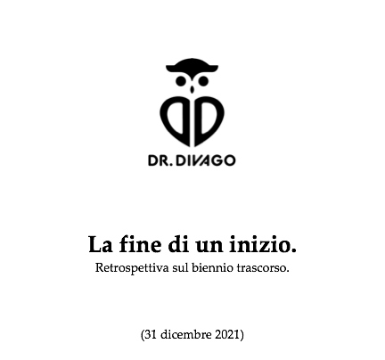
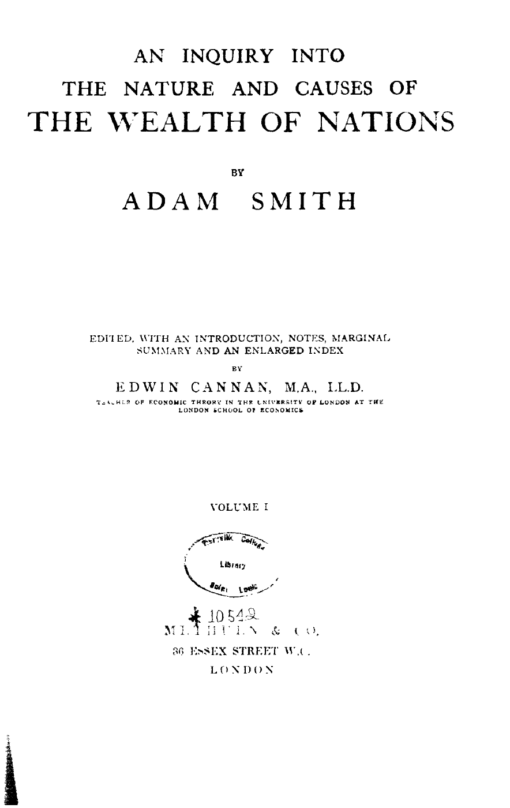
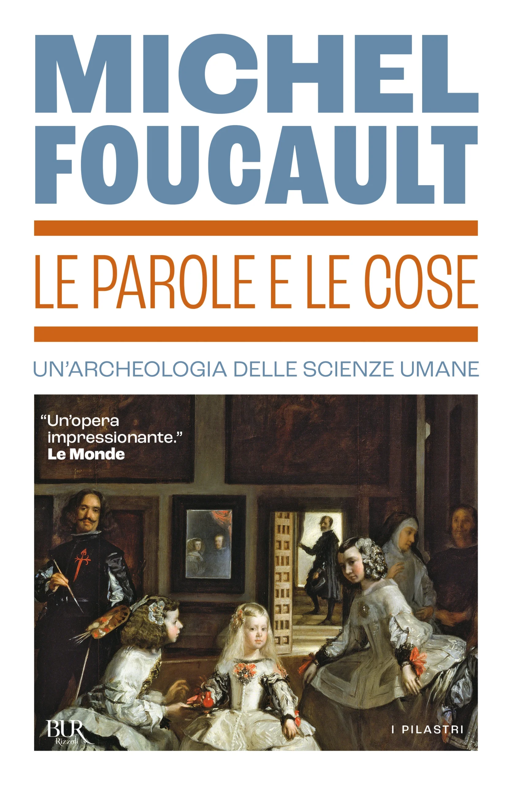
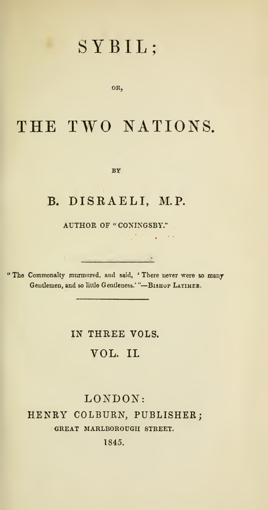
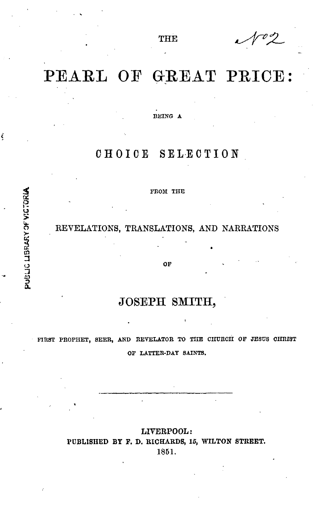
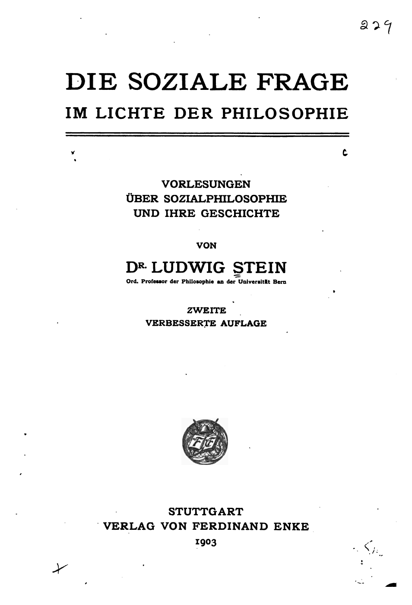

1:11:06 · 20 OPERE
La modernità come ideologia.
Il filo del discorso
Partendo da una recensione di Capitale e ideologia di Thomas Piketty, Dr Divago propone una critica della modernità come chiusura dentro modelli unici. La discussione collega ingegneria sociale, limiti del controllo, storia delle idee e rapporto fra teoria e pratica. Marx è al centro di un confronto che ne riconosce la grandezza intellettuale ma contesta la pretesa di esaurire la società attraverso una sola categoria economica. Le provocazioni sull’invenzione del capitalismo e sul rifiuto della metafisica sono presentate come tesi del relatore. Il percorso attraversa Marcuse, Schopenhauer, Isaia e Kant, quindi si apre alla questione sociale di Disraeli e Ludwig Stein. La cura degli animali e la reverenza per la vita offrono una digressione sull’etica; la Repubblica e il caso della Perla di Gran Prezzo servono a interrogare potere, giustizia e credenze. Una lettura della prima frase del Capitale conduce poi all’Antigone nella traduzione di Hölderlin e all’incipit della Metamorfosi: la vicinanza della parola ungeheuer permette a Dr Divago di disegnare un dialogo fra testi diversi, senza costituire da sola prova di un’influenza diretta. La conclusione oppone la persona produttrice di significato alla sua riduzione a componente di una massa. La scheda conserva il filo filosofico e distingue le analogie dai riscontri storici o scientifici: la teoria del caos non dimostra l’impossibilità di ogni intervento sociale, la Critica dell’economia politica 1859 precede il Capitale 1867 e l’adattamento ai ruoli sociali non è una diagnosi psichiatrica. Il settantunesimo senso chiude il contributo come immagine della voce individuale da preservare.
I libri nel discorso

Capitale e ideologia (Capital et idéologie)
Copertina: Éditions du Seuil ·2019 ·ISBN9782021338041
Copertina editoriale francese autentica: Thomas Piketty, Capital et idéologie, lettere nere e rosse, fondo bianco, Seuil. Edizione illustrativa 2019, non identificazione della copia o della lingua effettivamente usata nel video.
Thomas Piketty, Capital et idéologie e 2019 espliciti; recensione iniziale senza autore/titolo identificabili. Non assegnata al video una lettura integrale del libro.
Passaggio 0:14 ↗ · Fonti e libro ↗
Il capitale nel XXI secolo (Le capital au XXIe siècle)
Copertina: Éditions du Seuil ·2013 ·ISBN9782021082289
Copertina francese autentica con titolo Le capital au XXIe siècle, Thomas Piketty, collana Les livres du nouveau monde e fascia rossa editoriale conservata. La fascia appartiene all’immagine dell’editore, non è stata aggiunta. Lingua e ristampa della copia del relatore non certificate.
Piketty, libro 2013 e titolo riferito al XXI secolo espliciti. Distinto dal successivo 2019; il relatore ricorda di averlo letto poco dopo la pubblicazione.
Passaggio 0:26 ↗ · Fonti e libro ↗
La fine di un inizio. Retrospettiva sul biennio trascorso
Copertina: Dr.Divago ·saggio datato 31 dicembre 2021 ·pubblicazione blog 1 gennaio 2022
Frontespizio digitale autentico pubblicato dall’autore: logo Dr.Divago, titolo, sottotitolo e data 31 dicembre 2021. L’originale PNG trasparente è conservato; la resa JPEG su fondo bianco conserva integralmente i contenuti e permette la lettura del testo nero. Non copertina libraria inventata o immagine di un altro articolo.
La fine di un inizio è titolo esplicito. Originale del relatore localizzato: frontespizio 31 dicembre 2021, post 1 gennaio 2022, tutte 10 pagine lette; non monografia editoriale. Le tesi del saggio sono dell’autore.
Passaggio 3:00 ↗ · Fonti e libro ↗
La ricchezza delle nazioni (An Inquiry into the Nature and Causes of the Wealth of Nations)
Copertina: Methuen ·edizione Edwin Cannan 1904 ·volume I ·frontespizio
Frontespizio autentico intero dell’edizione Cannan, volume I, Methuen, dal facsimile Liberty Fund. Il verso successivo dichiara This edition first published in 1904. È un frontespizio, non la copertina originale 1776; autore Smith, curatore Cannan distinti. Timbri bibliotecari originali preservati.
Adam Smith e ricchezza delle nazioni espliciti. Catalogo e facsimile primario Cannan confermano il trattato; nessuna edizione specifica attribuita al video.
Passaggio 4:49 ↗ · Fonti e libro ↗
L’uomo a una dimensione
Copertina: Einaudi, Piccola Biblioteca Einaudi, 1999
Copertina di un’edizione bibliografica dell’opera, con introduzione di Luciano Gallino. La citazione nel video resta probabile; questa edizione non vi è confermata.
Marcuse e L’uomo a una dimensione espliciti nella critica al modello unico.
Passaggio 6:21 ↗ · Fonti e libro ↗
Tesi su Feuerbach
Copertina della raccolta che comprende le Tesi su Feuerbach: Newton Compton · Le opere che hanno cambiato il mondo · ebook · 2013
Copertina dell’ebook della raccolta Newton Compton, distinta dal volume cartaceo con altro ISBN. L’editore elenca esplicitamente le Tesi fra i contenuti. Non è l’edizione impiegata nel filmato.
Tesi su Feuerbach e frase dell’undicesima tesi sull’interpretare e cambiare il mondo esplicite; nessuna nuova opera o frammento autonomo duplicato.
Passaggio 7:49 ↗ · Fonti e libro ↗
Il mondo come volontà e rappresentazione
Copertina: Newton Compton · edizione di riferimento
Schopenhauer e Il mondo come volontà e rappresentazione espliciti; l’ASR del nome è normalizzato dal titolo univoco.
Passaggio 11:36 ↗ · Fonti e libro ↗
Le parole e le cose (Les Mots et les Choses / The Order of Things)
Identificazione probabile
Copertina: BURRizzoli ·2016 ·ISBN9788817085571
Copertina autentica intera fornita dall’editore: Michel Foucault, Le parole e le cose, Un’archeologia delle scienze umane, Las Meninas e marchio BUR. Originale francese 1966, edizione italiana illustrativa 2016; non attribuita alla copia del video.
Foucault e ordine delle cose espliciti, probabile titolo inglese The Order of Things, saggio Les Mots et les Choses 1966. Identificazione probabile, non un presunto diverso libro intitolato L’ordine delle cose.
Passaggio 12:38 ↗ · Fonti e libro ↗
Isaia
Copertina del volume completo: San Paolo, 2014 · Nuova Versione dai Testi Antichi · edizione di riferimento
Isaia è un libro della Bibbia. L’immagine mostra il volume completo di riferimento San Paolo, non un’edizione autonoma di Isaia né una versione identificata nella citazione.
Isaia e invito alzate gli occhi in alto e guardate espliciti: richiamo riconoscibile a 40,26, senza edizione o traduzione identificata.
Passaggio 14:32 ↗ · Fonti e libro ↗
Critica della ragion pratica
Identificazione probabile
Copertina: Bompiani, 2000
Kant, stelle e morale rinviano probabilmente alla conclusione della Critica della ragion pratica; titolo non pronunciato, non assegnata una pagina dell’edizione.
Passaggio 14:55 ↗ · Fonti e libro ↗
Genesi
Copertina: Einaudi, I libri della Bibbia / Einaudi Tascabili, 2000; introduzione di Steven Rose
Copertina dell’edizione autonoma Genesi, nella serie I libri della Bibbia, con introduzione di Steven Rose. Edizione scelta come riferimento iconografico; nessuna edizione è confermata nel video.
Genesi, Adamo e soffio divino espliciti, richiamo a 2,7. Golem è analogia del relatore, non termine garantito del passo.
Passaggio 16:31 ↗ · Fonti e libro ↗
Il capitale
Copertina: Editori Riuniti · Libro primo
Marx e Il Capitale espliciti; lettura della prima frase del libro I a 2878 s, con ungeheure Warensammlung. Parte Waren und Geld distinta dal capitolo Die Ware.
Passaggio 26:58 ↗ · Fonti e libro ↗
Sybil; or, The Two Nations
Copertina: Henry Colburn ·Londra 1845 ·volume II dei tre originali ·frontespizio
Frontespizio autentico intero del volume II1845, copia University of Illinois: Sybil, The Two Nations, B.Disraeli, In Three Vols, Vol.II, Henry Colburn 1845. Illustra un volume della stessa opera, non una seconda opera né il frontespizio di Coningsby, citato sul foglio solo come precedente dell’autore. Edizione del video non certificata.
Benjamin Disraeli, Sybil e 1845 espliciti; romanzo sociale mostrato. Il passo inglese successivo su manners ehostile garrisons non certificato nel corpo del romanzo.
Passaggio 27:56 ↗ · Fonti e libro ↗
La Repubblica
Copertina: Laterza · La Repubblica · edizione con testo a fronte di riferimento
Immagine associata all’ISBN di riferimento e controllata visivamente; edizione e traduzione non identificate come quelle citate o lette nel video.
Platone, Repubblica e Trasimaco espliciti: giustizia come utile del più forte nel libro I. Tesi del personaggio, non dottrina condivisa da tutto il dialogo.
Passaggio 37:27 ↗ · Fonti e libro ↗
Perla di Gran Prezzo (The Pearl of Great Price)
Copertina: F.D.Richards ·Liverpool 1851 ·frontespizio prima edizione
Frontespizio autentico intero della prima raccolta 1851: Joseph Smith, F.D.Richards, Liverpool, anno 1851 e timbro Public Library of Victoria. È frontespizio, non copertina esterna contemporanea. Non il manuale per studenti o il diverso libro da colorare della stessa Chiesa.
Perla di gran prezzo e Joseph Smith espliciti; i papiri e Abrahamo riguardano una sezione della raccolta. Distinta dal Libro di Mormon e dai manuali didattici.
Passaggio 40:00 ↗ · Fonti e libro ↗
Antigone
Copertina: Einaudi · Collezione di teatro · edizione di riferimento
Immagine associata all’ISBN di riferimento e controllata visivamente; edizione e traduzione non identificate come quelle citate o lette nel video.
Sofocle, Antigone, greco polla ta deina e traduzione Hölderlin espliciti. Riuso della tragedia con versione tedesca dichiarata, non seconda opera.
Passaggio 50:13 ↗ · Fonti e libro ↗La metamorfosi
Copertina: Marsilio · 2024
Copertina autentica controllata visivamente. Edizione di riferimento; non identifica l’esemplare usato o citato nel video.
Kafka, Metamorfosi, Gregor Samsa e incipit tedesco con ungeheueren Ungeziefer espliciti; novella distinta dai romanzi e nessuna specie zoologica certificata.
Passaggio 51:50 ↗ · Fonti e libro ↗
Die soziale Frage im Lichte der Philosophie. Vorlesungen über Sozialphilosophie und ihre Geschichte
Copertina: Ferdinand Enke ·Stoccarda 1903 ·seconda edizione migliorata ·frontespizio
Frontespizio autentico intero della seconda edizione 1903: Die Soziale Frage, Ludwig Stein, Universität Bern, Zweite Verbesserte Auflage, Ferdinand Enke 1903. La scansione del PDFpagina 6 è controllata; due immagini API inizialmente recuperate erano una pagina di prefazione e una carta bianca e sono escluse. Non Lorenz von Stein né Rudolf Steiner.
Ludwig Stein, Die soziale Frage im Lichte der Philosophie, lezioni Berna e anno corretto 1903 espliciti. Seconda edizione migliorata del 1897, frontespizio primario verificato.
Passaggio 54:59 ↗ · Fonti e libro ↗
Ideas Have Consequences (Le idee hanno conseguenze)
Copertina: Copertina ufficiale University of Chicago Press,Expanded Edition2013,ISBN9780226090061: titolo blu e rosso,RichardM.Weaver e prefazioneRogerKimball leggibili. Non è la copertina originale1948 o una edizione italiana identificata nel filmato.
Immagine autentica dell’opera, controllata visivamente; l’edizione di riferimento non è attribuita al filmato.
Weaver e Ideas Have Consequences espliciti; normalizzazione del nome dal titolo univoco. Il confronto fra égalité e fraternité è la lettura del relatore, senza pagina o citazione letterale del libro certificata.
Passaggio 1:02:17 ↗ · Fonti e libro ↗
Il settantunesimo senso. Omaggio a Paolo De Benedetti
Identificazione probabile
Copertina del fascicolo Humanitas 1/2006: Humanitas, nuova serie, anno LXI, numero 1, gennaio–febbraio 2006, Brescia, Morcelliana, 192 pagine nel fascicolo commerciale, ISBN 9788837220891. La sezione omaggio è registrata dai curatori alle pagine 4–143. La copertina specifica riporta titolo, numero e nomi dei contributori; il segnaposto IBS è stato respinto.
Copertina autentica del fascicolo monografico, non un libro d’autore di Paolo De Benedetti. Identificazione della citazione dichiarata probabile.
Titolo Il settantunesimo senso e ricordo di un amico. Probabile fascicolo Humanitas 1/2006 già censito, omaggio a Paolo De Benedetti; non libro scritto integralmente da De Benedetti.
Passaggio 1:09:43 ↗ · Fonti e libro ↗Minutaggi ricavati da testi automatici, da riascoltare. Le identificazioni probabili sono segnalate accanto ai libri.